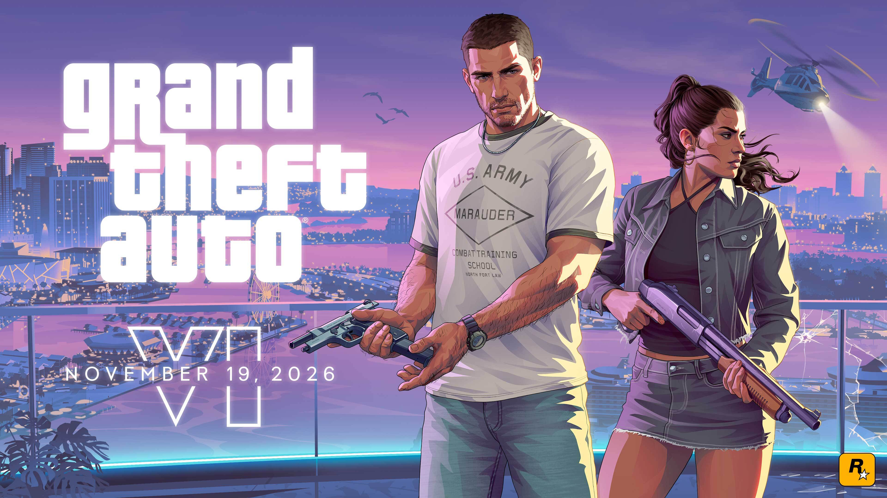

GTA6 콘솔 30프레임 목표, PS5 Pro는 뭐가 달라질까
GTA6 콘솔 성능 목표가 사전 로드 소식과 함께 공개됐는데요. 출시일은 11월 19일이라 이제 콘솔 앞에서 어떤 화면을 만나게 될지가 궁금해지는 시기네요. 콘솔에서 노리는 프레임과 PS5 Pro를 쓰시는 분들이 궁금해할 만한 부분을 짚어 보겠습니다. 'PS5 Pro로 하면 60프레임이 되나요?' 같은 질문부터 'Xbox 시리즈 S는요?'까지 순서대로 하나씩 풀어 보겠습니다.

락스타게임즈 사전 로드 공지의 대표 이미지입니다. 이미지 속 출시일은 NOVEMBER 19, 2026으로 적혀 있습니다.
이미지 출처: Rockstar Games, Pre-Load Grand Theft Auto VI Now · 네이버 본문엔 받아서 재업로드 권장
GTA6 콘솔 성능, 초당 30프레임 목표
GTA6는 현세대 콘솔에서 초당 30프레임을 목표로 개발됐습니다.
영문 표현은 'targeting 30 frames per second'인데요. 현세대 콘솔에서 가장 좋은 경험을 주려고 처음부터 새로 만들었고, 그 과정에서 두 플랫폼의 한계까지 끌어올린다는 말이 같은 문장에 이어서 나옵니다. 여기서 눈여겨볼 단어는 '목표'인데요. 저는 30이라는 숫자를 보고 곧바로 아쉬움부터 느끼기보다 목표치로 받아들이면서 실제 화면을 기다려 보는 쪽이 마음 편할 거 같습니다. 모든 장면에서 똑같은 숫자가 나온다고 단정하기는 아무래도 이릅니다.
GTA6 PS5 Pro, 달라지는 점 표로 보기
PS5 Pro 쪽 내용은 프레임 목표와 화질 기능으로 나눠서 보면 정리가 쉬운데요.
PS5 Pro 쪽은 아직 정식 발표라기보다 전해지는 이야기가 많아서 표로 모아 뒀습니다.
| 항목 | 내용 | 보도(2026-11-15 기준) |
|---|---|---|
| 프레임 목표 | 초당 30프레임 목표가 PS5 Pro를 포함한 PS5, Xbox 시리즈 X/S 전체에 해당 | 노트북체크 |
| 프레임 고정 여부 | 30프레임 목표가 모든 상황의 고정 프레임을 뜻하지는 않는다는 점 | 노트북체크 |
| PSSR | PS5 Pro 전용으로 지원, AI 기반 업스케일링 기술이라 화질(이미지 선명도) 쪽 항목 | 노트북체크 · 트위스티드복셀 |
| 레이 트레이싱 그림자 | PS5 Pro 전용, PSSR과는 별개 항목 | 노트북체크 · 트위스티드복셀 |
| DualSense 햅틱 · Tempest 3D 오디오 · 로딩 최적화 | PS5 버전이 지원 | 노트북체크 |
표 출처: 노트북체크, 트위스티드복셀 보도 · 2026-11-15 기준 (공식 공지가 아니라 매체에서 전한 내용)
표에서 PSSR과 레이 트레이싱 그림자가 따로 한 줄씩 적힌 이유는 두 기능이 하는 일이 다르기 때문인데요. 하나로 묶어서 외우면 나중에 헷갈릴 수 있으니 항목별로 따로 기억해 두시면 좋겠습니다. 60프레임 질문은 바로 아래 확인 칸에 따로 모아 두겠습니다.
확인 위치: 출시일 이후 PS5 Pro 게임 내 그래픽 설정 화면 · 내용이 확인되면 이 칸을 실제 설정 이름과 내용으로 교체해 주세요.
GTA6 Xbox 시리즈 S, 클라우드·리모트 플레이
Xbox 시리즈 S와 클라우드, 리모트 플레이 내용도 표 한 장으로 모아 보겠습니다.
| 항목 | 내용 | 보도(2026-11-15 기준) |
|---|---|---|
| Xbox 시리즈 S | 렌더링 해상도와 그래픽 타협 내용 미공개 | 노트북체크 |
| Xbox 클라우드 게임 | 플레이할 수 있고, Xbox 시리즈 S의 그래픽 설정이 적용 | 게임메카 · 트위스티드복셀 |
| 클라우드 성능 | 연결 속도 등에 따라 로컬 플레이와 성능 차이 가능 | 트위스티드복셀(락스타 안내) |
| 리모트 플레이 | PS5 및 Xbox 리모트 플레이 지원 | 게임메카 |
표 출처: 게임메카, 노트북체크, 트위스티드복셀
Xbox 시리즈 S로 즐기실 분들은 해상도 숫자가 나오는 때를 기다리실 텐데요. 출시 뒤 리뷰나 비교 영상에서 구체적인 모습이 나오지 않을까 조심스럽게 예상해 봅니다. 클라우드나 리모트로 즐기실 분들은 네트워크 환경이 체감을 좌우하니 집 안 인터넷 상태를 미리 떠올려 보시면 좋겠습니다.
내 기기별로 어디부터 보면 좋을까요
· PS5 Pro라면 표에서 PSSR과 레이 트레이싱 그림자 줄부터 보시면 되겠습니다. 이 두 줄이 PS5 Pro 쪽 항목입니다.
· 기본 PS5는 30프레임 목표 줄이 먼저 보이는데요. 기기 구분 없이 가장 먼저 기준이 되는 값입니다.
· Xbox 시리즈 S라면 해상도 줄과 클라우드 줄을 같이 보시면 좋은데, 클라우드판이 시리즈 S 설정을 쓰는 만큼 두 항목이 이어지기 때문입니다.
출시 전에 확인할 것
GTA6를 디지털로 예약 구매하신 분들은 지금 바로 사전 로드할 수 있습니다.
프레임 목표 때문에 사전 로드를 미룰 이유는 없다고 저는 생각합니다. 성능은 출시 뒤 게임 안에서 마주하는 부분이라 받아 두는 일과는 따로 움직이는 이야기니까요. 사전 로드 시각이나 용량 이야기는 아래 같이 보기에 정리해 둔 글에서 보시면 되겠습니다.
| 항목 | 내용 | 보도(2026-11-15 기준) |
|---|---|---|
| 출시 예정일 · 플랫폼 | 11월 19일, PS5와 Xbox 시리즈 X/S | 게임메카 |
| 개발 상태 | 미국 시간 9일 실적 발표에서 테이크투 CEO가 골드행(개발 완료) 언급 | 게임메카 |
표 출처: 게임메카
개발이 마무리됐다는 소식까지 나온 만큼 출시 전에 내 콘솔에서 챙길 건 사전 로드 정도입니다. 프레임이나 화질 걱정은 출시 뒤 실제 화면을 본 다음에 해도 늦지 않겠다 싶네요.
내 콘솔에서 GTA6 사전 로드가 진행되는 화면입니다.
저는 〔PS5 Pro / 기본 PS5 / Xbox 시리즈 X / Xbox 시리즈 S〕로 출시일을 맞이할 예정이에요.
자주 묻는 질문
Q. 락스타는 왜 30프레임을 목표로 잡았나요?
공지에서 밝힌 이유는 리오나이다(Leonida)의 넓고 풍성한 세계를 그대로 살리면서 곳곳의 빽빽함과 화면 완성도를 지키려는 것이라는 설명입니다. 숫자만 보면 아쉽게 느껴질 수 있지만 세계의 빽빽함을 우선했다는 이야기라 저는 납득이 되네요.
Q. 코드 인 박스판은 언제부터 사전 로드가 되나요?
코드 인 박스판을 예약 구매하신 분들은 코드를 받는 대로 활성화하고 사전 로드를 시작하실 수 있습니다.
11월 19일, 다들 즐겁게 달릴 준비 해 봐요 ㅎㅎ
✔ GTA6 같이 보기 좋은 내용
· GTA6 스펙 212GB, 사전 다운로드 자동 설정 PS5 Xbox
· GTA6 사전 다운로드 11월 12일부터, 디지털·실물 코드로 받는 법
· GTA6 예약 차이 스탠다드 얼티밋 에디션 비교, 예약 특전은 어디까지 공통일까?
참고한 곳 (2026.11.15 기준)
· 락스타게임즈 뉴스와이어 «Pre-Load Grand Theft Auto VI Now»